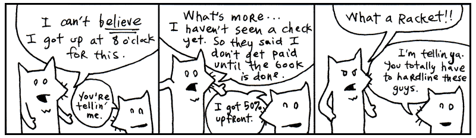
Yeah, these are the two. My asthma’s kickin in so I’ve got to go take a puff of medicated air just now. Be with you in a moment.
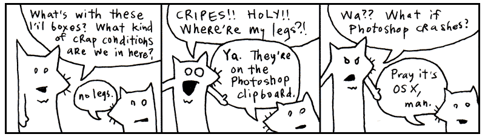
I’m told that this chapter is best accompanied by a rag. Something you can mop your face with as the sweat pours off your face.
Indeed, we’ll be racing through the whole language. Like striking every match in a box as quickly as can be done.
1. Language and I MEAN Language
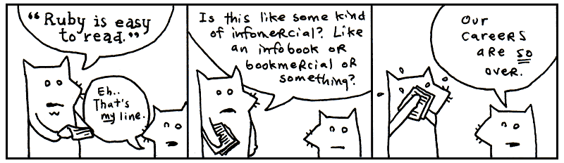
My conscience won’t let me call Ruby a computer language. That would imply that the language works primarily on the computer’s terms. That the language is designed to accomodate the computer, first and foremost. That therefore, we, the coders, are foreigners, seeking citizenship in the computer’s locale. It’s the computer’s language and we are translators for the world.
But what do you call the language when your brain begins to think in that language? When you start to use the language’s own words and colloquialisms to express yourself. Say, the computer can’t do that. How can it be the computer’s language? It is ours, we speak it natively!
We can no longer truthfully call it a computer language. It is coderspeak. It is the language of our thoughts.
Read the following aloud to yourself.
5.times { print "Odelay!" }
In English sentences, punctuation (such as periods, exclamations, parentheses) are silent. Punctuation adds meaning to words, helps give cues as to what the author intended by a sentence. So let’s read the above as: Five times print “Odelay!”.
Which is exactly what this small Ruby program does. Beck’s mutated Spanish exclamation will print five times on the computer screen.
Read the following aloud to yourself.
exit unless "restaurant".include? "aura"
Here we’re doing a basic reality check. Our program will exit (the program will end) unless the word restaurant contains (or includes) the word aura. Again, in English: Exit unless the word restaurant includes the word aura.
Ever seen a programming language use question marks so effectively? Ruby uses some punctuation, such as exclamations and question marks, to enhance readability of the code. We’re asking a question in the above code, so why not make that apparent?
Read the following aloud to yourself.
['toast', 'cheese', 'wine'].each { |food| print food.capitalize }
While this bit of code is less readable and sentence-like than the previous examples, I’d still encourage you to read it aloud. While Ruby may sometimes read like English, it sometimes reads as a shorter English. Fully translated into English, you might read the above as: With the words ‘toast’, ‘cheese’, and ‘wine’: take each food and print it capitalized.
The computer then courteously responds: Toast, Cheese and Wine.
At this point, you’re probably wondering how these words actually fit together. Smotchkkiss is wondering what the dots and brackets mean. I’m going to discuss the various parts of speech next.
All you need to know thus far is that Ruby is basically built from sentences. They aren’t exactly English sentences. They are short collections of words and punctuation which encompass a single thought. These sentences can form books. They can form pages. They can form entire novels, when strung together. Novels that can be read by humans, but also by computers.
2. The Parts of Speech
Just like the white stripe down a skunk’s back and the winding, white train of a bride, many of Ruby’s parts of speech have visual cues to help you identify them. Punctuation and capitalization will help your brain to see bits of code and feel intense recognition. Your mind will frequently yell Hey, I know that guy! You’ll also be able to name-drop in conversations with other Rubyists.
Try to focus on the look of each of these parts of speech. The rest of the book will detail the specifics. I give short descriptions for each part of speech, but you don’t have to understand the explanation. By the end of this chapter, you should be able to recognize every part of a Ruby program.
Variables
Any plain, lowercase word is a variable in ruby. Variables may consist of letters, digits and underscores.
x,y,banana2orphone_a_quailare examples.
Variables are like nicknames. Remember when everyone used to call you Stinky Pete? People would say, “Get over here, Stinky Pete!” And everyone miraculously knew that Stinky Pete was you.
With variables, you give a nickname to something you use frequently. For instance, let’s say you run an orphanage. It’s a mean orphanage. And whenever Daddy Warbucks comes to buy more kids, we insist that he pay us one-hundred twenty-one dollars and eight cents for the kid’s teddy bear, which the kid has become attached to over in the darker moments of living in such nightmarish custody.
teddy_bear_fee = 121.08
Later, when you ring him up at the cash register (a really souped-up cash register which runs Ruby!), you’ll need to add together all his charges into a total.
total = orphan_fee + teddy_bear_fee + gratuity
Those variable nicknames sure help. And in the seedy underground of child sales, any help is appreciated I’m sure.
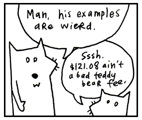
Numbers
The most basic type of number is an integer, a series of digits which can start with a plus or minus sign.
1,23, and-10000are examples.
Commas are not allowed in numbers, but underscores are. So if you feel the need to mark your thousands so the numbers are more readable, use an underscore.
population = 12_000_000_000
Decimal numbers are called floats in Ruby. Floats consist of numbers with a decimal place or scientific notation.
3.14,-808.08and12.043e-04are examples.
Strings
Strings are any sort of characters (letters, digits, punctuation) surrounded by quotes. Both single and double quotes are used to create strings.
"sealab",'2021', or"These cartoons are hilarious!"are examples.
When you enclose characters in quotes, they are stored together as a single string.
Think of a reporter who is jotting down the mouthnoises of a rambling celebrity. “I’m a lot wiser,” says Avril Lavigne. “Now I know what the business is like—what you have to do and how to work it.”
avril_quote = "I'm a lot wiser. Now I know
what the business is like -- what you have
to do and how to work it."So, just as we stored a number in the teddy_bear_fee variable, now we’re storing a collection of characters (a string) in the avril_quote variable. The reporter sends this quote to the printers, who just happen to use Ruby to operate their printing press.
print oprah_quote
print avril_quote
print ashlee_simpson_debacle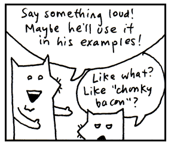
Symbols
Symbols are words that look just like variables. Again, they may contain letters, digits, or underscores. But they start with a colon.
:a,:b, or:ponce_de_leonare examples.
Symbols are lightweight strings. Usually, symbols are used in situations where you need a string but you won’t be printing it to the screen.
You could say a symbol is a bit easier on the computer. It’s like an antacid. The colon indicates the bubbles trickling up from your computer’s stomach as it digests the symbol. Ah. Sweet, sweet relief.
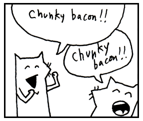
Constants
Constants are words like variables, but constants are capitalized. If variables are the nouns of Ruby, then think of constants as the proper nouns.
Time,ArrayorBunny_Lake_is_Missingare examples.
In English, proper nouns are capitalized. The Empire State Building. You can’t just move The Empire State Building. You can’t just decide that the Empire State Building is something else. Proper nouns are like that. They refer to something very specific and usually don’t change over time.
In the same way, constants can’t be changed after they are set.
EmpireStateBuilding = "350 5th Avenue, NYC, NY"
If we try to change the constant, Ruby will complain to us. Such things are frowned upon.
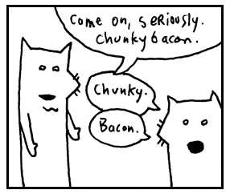
Methods
If variables and constants are the nouns, then methods are the verbs. Methods are usually attached to the end of variables and constants by a dot. You’ve already seen methods at work.
front_door.open
In the above, open is the method. It is the action, the verb. In some cases, you’ll see actions chained together.
front_door.open.close
We’ve instructed the computer to open the front door and then immediately close it.
front_door.is_open?
The above is an action as well. We’re instructing the computer to test the door to see if it’s open. The method could be called Door.test_to_see_if_its_open, but the is_open? name is succinct and just as correct. Both exclamation marks and question marks may be used in method names.
Method arguments
A method may require more information in order to perform its action. If we want the computer to paint the door, we should provide a color as well.
Method arguments are attached to the end of a method. The arguments are usually surrounded by parentheses and separated by commas.
front_door.paint( 3, :red )
The above paints the front door 3 coats of red.
Think of it as an inner tube the method is pulling along, containing its extra instructions. The parentheses form the wet, round edges of the inner tube. The commas are the feet of each argument, sticking over the edge. The last argument has its feet tucked under so they don’t show.
Like a boat pulling many inner tubes, methods with arguments can be chained.
front_door.paint( 3, :red ).dry( 30 ).close()
The above paints the front door 3 coats of red, dries for 30 minutes, and closes the door. Even though the last method has no arguments, you can still put parentheses if you like. There is no use dragging an empty inner tube, so the parentheses are normally dropped.
Some methods (such as print) are kernel methods. These methods are used throughout Ruby. Since they are so common, you won’t use the dot.
print "See, no dot."
Class methods
Like the methods described above (also called instance methods), class methods are usually attached after variables and constants. Rather than a dot, a double colon is used.
Door::new( :oak )
As seen above, the new class method is most often used to create things. In the above example, we’re asking Ruby to make a new oak door for us. Of course, Ruby has to have an understanding of how to make a door—as well as a wealth of timber, lumberjacks, and those long, wiggily, two-man saws.
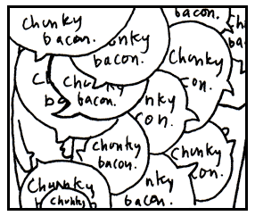
Global variables
Variables which begin with a dollar sign are global.
$x,$1,$chunkyand$CHunKY_bACOnare examples.
Most variables are rather temporary in nature. Some parts of your program are like little houses. You walk in and they have their own variables. In one house, you may have a dad that represents Archie, a travelling salesman and skeleton collector. In another house, dad could represent Peter, a lion tamer with a great love for flannel. Each house has its own meaning for dad.
With global variables, you can be guaranteed that the variable is the same in every little house. The dollar sign is very appropriate. Every American home respects the value of the dollar. We’re crazy for the stuff. Try knocking on any door in America and hand them cash. I can guarantee you won’t get the same reaction if you knock on a door and offer Peter, a lion tamer with a great love for flannel.
Global variables can be used anywhere in your program. They never go out of sight.
Instance variables
Variables which begin with an at symbol are instance variables.
@x,@y, and@only_the_chunkiest_cut_of_bacon_I_have_ever_seenare examples.
These variables are often used to define the attributes of something. For example, you might provide Ruby with the width of the front_door by setting the @width variable inside that front_door. Instance variables are used to define characteristics of a single object in Ruby.
Think of the at symbol as meaning attribute.
Class variables
Variables which begin with double at symbols are class variables.
@@x,@@y, and@@i_will_take_your_chunky_bacon_and_raise_you_twoare examples.
Class variables, too, are used to define attributes. But rather than defining an attribute for a single object in Ruby, class variables give an attribute to many related objects in Ruby. If instance variables set attributes for a single front_door, then class variables set attributes for everything that is a Door.
Think of the double at prefix as meaning attribute all. Additionally, you can think of a swarm of AT-ATs from Star Wars, which are all commanded by Ruby. You change a class variable and not just one changes, they all change.
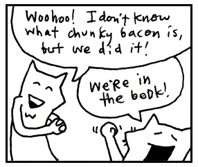
Blocks
Any code surrounded by curly braces is a block.
2.times { print "Yes, I've used chunky bacon in my examples, but never again!" }is an example.
With blocks, you can group a set of instructions together so that they can be passed around your program. The curly braces give the appearance of crab pincers that have snatched the code and are holding it together. When you see these two pincers, remember that the code inside has been pressed into a single unit.
It’s like one of those little Hello Kitty boxes they sell at the mall that’s stuffed with tiny pencils and microscopic paper, all crammed into a glittery transparent case that can be concealed in your palm for covert stationary operations. Except that blocks don’t require so much squinting.
The curly braces can also be traded for the words do and end, which is nice if your block is longer than one line.
loop do
print "Much better."
print "Ah. More space!"
print "My back was killin' me in those crab pincers."
endBlock arguments
Block arguments are a set of variables surrounded by pipe characters and separated by commas.
|x|,|x,y|, and|up, down, all_around|are examples.
Block arguments are used at the beginning of a block.
{ |x,y| x + y }
In the above example, |x,y| are the arguments. After the arguments, we have a bit of code. The expression x + y adds the two arguments together.
I like to think of the pipe characters as representing a tunnel. They give the appearance of a chute that the variables are sliding down. (An x goes down spread eagle, while the y neatly crosses her legs.) This chute acts as a passageway between blocks and the world around them.
Variables are passed through this chute (or tunnel) into the block.
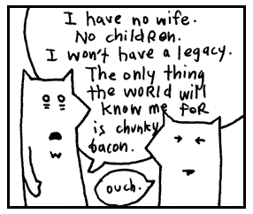
Ranges
A range is two values surrounded by parentheses and separated by an ellipsis (in the form of two or three dots).
(1..3)is a range, representing the numbers 1 through 3.
('a'..'z')is a range, representing a lowercase alphabet.
Think of it as an accordion which has been squeezed down for carrying. (Sure, you can build a great sense of self-worth by carrying around an unfolded accordion, but sometimes a person needs to wallow in self-doubt, carefully concealing the squeeze-box.) The parentheses are the handles on the sides of a smaller, handheld accordion. The dots are the chain, keeping the folds tightly closed.
Normally, only two dots are used. If a third dot is used, the last value in the range is excluded.
(0...5)represents the numbers 0 through 4.
When you see that third dot, imagine opening the accordion slightly. Just enough to let one note from its chamber. The note is that end value. We’ll let the sky eat it.
Arrays
An array is a list surrounded by square brackets and separated by commas.
[1, 2, 3]is an array of numbers.
['coat', 'mittens', 'snowboard']is an array of strings.
Think of it as a caterpillar which has been stapled into your code. The two square brackets are staples which keep the caterpillar from moving, so you can keep track of which end is the head and which is the tail. The commas are the caterpillar’s legs, wiggling between each section of its body.
Once there was a caterpillar who had commas for legs. Which meant he had to allow a literary pause after each step. The other caterpillars really respected him for it and he came to have quite a commanding presence. Oh, and talk about a philanthropist! He was notorious for giving fresh leaves to those less-fortunate.
Yes, an array is a collection of things, but it also keeps those things in a specific order.
Hashes
A hash is a dictionary surrounded by curly braces. Dictionaries match words with their definitions. Ruby does so with arrows made from an equals sign, followed by a greater-than sign.
{'a' => 'aardvark', 'b' => 'badger'}is an example.
This time, the curly braces represent little book symbols. See how they look like little, open books with creases down the middle? They represent opening and closing our dictionary.
Imagine our dictionary has a definition on each of its pages. The commas represent the corner of each page, which we turn to see the next definition. And on each page: a word followed by an arrow pointing to the definition.
{
'name' => 'Peter',
'profession' => 'lion tamer',
'great love' => 'flannel'
}I’m not comparing hashes to dictionaries because you can only store definitions in a hash. In the example above, I stored personal information for Peter, the lion tamer with a great love for flannel. Hashes are like dictionaries because they can be very easy to search through.
Unlike arrays, the items in a hash are not kept in a specific order.
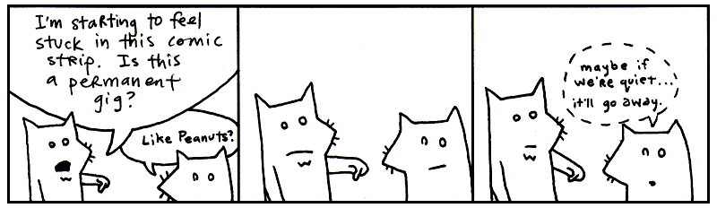
Regular Expressions
A regular expression (or regexp) is a set of characters surrounded by slashes.
/ruby/,/[0-9]+/and/^\d{3}-\d{3}-\d{4}/are examples.
Regular expressions are used to find words or patterns in text. The slashes on each side of the expression are pins.
Imagine if you had a little word with pins on both side and you held it over a book. You pass the word over the book and when it gets near a matching word, it starts blinking. You pin the regular expression onto the book, right over the match and it glows with the letters of the matching word.
Oh, and when you poke the pins into the book, the paper sneezes, reg-exp!
Regular expressions are much faster than passing your hand over pages of a book. Ruby can use a regular expression to search volumes of books very quickly.
Operators
You’ll use the following list of operators to do math in Ruby or to compare things. Scan over the list, recognize a few. You know, addition + and subtraction - and so on.
** ! ~ * / % + - & << >> | ^ > >= < <= <=> || != =~ !~ && += -= == === .. ... not and or
Keywords
Ruby has a number of built-in words, imbued with meaning. These words cannot be used as variables or changed to suit your purposes. Some of these we’ve already discussed. They are in the safe house, my friend. You touch these and you’ll be served an official syntax error.
alias and BEGIN begin break case class def defined do else elsif END end ensure false for if in module next nil not or redo rescue retry return self super then true undef unless until when while yield
Good enough. These are the illustrious members of the Ruby language. We’ll be having quite the junket for the next three chapters, gluing these parts together into sly bits of (poignant) code.
I’d recommend skimming all of the parts of speech once again. Give yourself a broad view of them. I’ll be testing your metal in the next section.
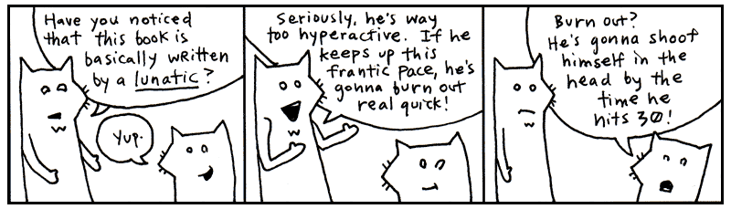
3. If I Haven't Treated You Like a Child Enough Already
I’m proud of you. Anyone will tell you how much I brag about you. How I go on and on about this great anonymous person out there who scrolls and reads and scrolls and reads. “These kids,” I tell them. “Man, these kids got heart. I never…” And I can’t even finish a sentence because I’m absolutely blubbering.
And my heart glows bright red under my filmy, translucent skin and they have to administer 10cc of JavaScript to get me to come back. (I respond well to toxins in the blood.) Man, that stuff will kick the peaches right out your gills!
So, yes. You’ve kept up nicely. But now I must begin to be a brutal schoolmaster. I need to start seeing good marks from you. So far, you’ve done nothing but move your eyes around a lot. Okay, sure, you did some exceptional reading aloud earlier. Now we need some comprehension skills here, Smotchkkiss.
Say aloud each of the parts of speech used below.
5.times { print "Odelay!" }
You might want to even cover this paragraph up while you read, because your eyes might want to sneak to the answer. We have a number 5, followed by a method .times. Then, the first crab pincers of a block. The kernel method print has no dot and is followed by a string "Odelay!". The final crab pincers close our block.
Say aloud each of the parts of speech used below.
exit unless "restaurant".include? "aura"
Like the print method, exit is a kernel method. If you were paying attention during the big list of keywords, you’ll know that unless is just such a keyword. The string "restaurant" is clung to by the method include?. And finally, the string "aura".
Say aloud each of the parts of speech used below.
['toast', 'cheese', 'wine'].each { |food| print( food.capitalize ) }
This caterpillar partakes of finer delicacies. An array starts this example. In the array, three strings 'toast', 'cheese', and 'wine'. The whole array is trailed by a method each.
Inside of a block, the block argument food, travelling down its little waterslide into the block. The method capitalize then capitalizes the first letter of the block argument, which has become variable food. This capitalized string is passed to kernel method print.
Look over these examples once again. Be sure you recognize the parts of speech used. They each have a distinct look, don’t they? Take a deep breath, press firmly on your temples. Now, let’s dissect a cow’s eye worth of code.
4. An Example to Help You Grow Up
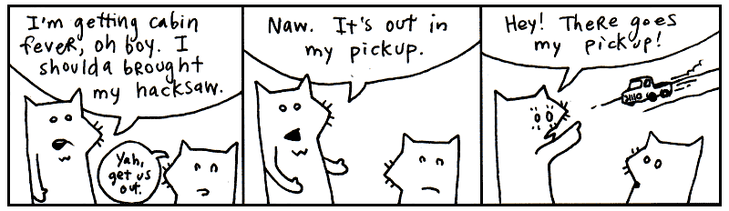
Say aloud each of the parts of speech used below.
require 'net/http'
Net::HTTP.start( 'www.ruby-lang.org', 80 ) do |http|
print( http.get( '/en/LICENSE.txt' ).body )
endThe first line is a method call. The method called require is used. A string is passed to the method containing 'net/http'. Think of this first line of code as a sentence. We have told Ruby to load some helper code, the Net::HTTP library.
The next three lines all go together. The constant Net::HTTP refers to the library we loaded above. We are using the method start from the library. Into the method, we’re sending a string 'www.ruby-lang.org' and the number 80.
The word do opens a block. The block has one block variable http. Inside the block, the method print is called. What is being printed?
From the variable http, the method get is called. Into get, we pass a string containing the path '/en/LICENSE.txt'. Now, notice that another method is chained onto get. The method body. Then, the block closes with end.
Doing okay? Just out of curiousity, can you guess what this example does? Hopefully, you’re seeing some patterns in Ruby. If not, just shake your head vigorously while you’ve got these examples in your mind. The code should break apart into manageable pieces.
For example, this pattern is used a number of times:
variable . method ( method arguments )
You see it inside the block:
http.get( '/en/LICENSE.txt' )
We’re using Ruby to get a web page. You’ve probably used HTTP with your web browser. HTTP is the Hypertext Transfer Protocol. HTTP is used to transfer web pages across the internet. Conceptualize a bus driver that can drive across the internet and bring back web pages for us. On his hat are stitched the letters HTTP.
The variable http is that bus driver. The method is a message to the bus driver. Go get the web page called /en/LICENSE.txt.
So where you see the chain of methods:
http.get( '/en/LICENSE.txt' ).body
Since we’ll be getting back a web page from the http bus driver, you can read this in your brain as:
web page .body
And this bit of code:
print( http.get( '/en/LICENSE.txt' ).body )
This code gets the web page. We send a body message to the web page, which gives us all the HTML in a string. We then print that string. See how the basic dot-method pattern happens in a chain. The next chapter will explore all these sorts of patterns in Ruby. It’ll be good fun.
So, what does this code do? It prints the HTML for the Ruby home page to the screen. Using an web-enabled bus driver.
5. And So, The Quick Trip Came To An Eased, Cushioned Halt
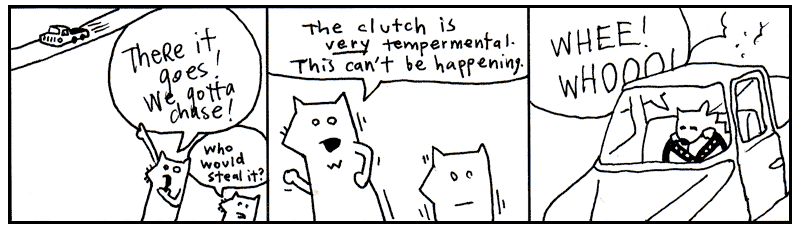
So now we have a problem. I get the feeling that you are enjoying this way too much. And you haven’t even hit the chapter where I use jump-roping songs to help you learn how to parse XML!
If you’re already enjoying this, then things are really going bad. Two chapters from now you’ll be writing your own Ruby programs. In fact, it’s right about there that I’ll have you start writing your own role-playing game, your own file-sharing network (a la BitTorrent), as well as a program that will pull genuine random numbers from the Internet.
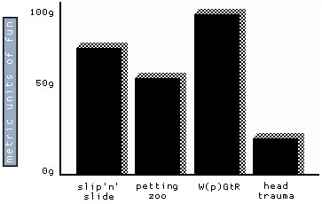
And you know (you’ve got to know!) that this is going to turn into an obsession. First, you’ll completely forget to take the dog out. It’ll be standing by the screen door, darting its head about, as your eyes devour the code, as your fingers slip messages to the computer.
Thanks to your neglect, things will start to break. Your mounds of printed sheets of code will cover up your air vents. Your furnace will choke. The trash will pile-up: take-out boxes you hurriedly ordered in, junk mail you couldn’t care to dispose of. Your own uncleanliness will pollute the air. Moss will infest the rafters, the water will clog, animals will let themselves in, trees will come up through the foundations.
But your computer will be well-cared for. And you, Smotchkkiss, will have nourished it with your knowledge. In the eons you will have spent with your machine, you will have become part-CPU. And it will have become part-flesh. Your arms will flow directly into its ports. Your eyes will accept the video directly from DVI-24 pin. Your lungs will sit just above the processor, cooling it.
And just as the room is ready to force itself shut upon you, just as all the overgrowth swallows you and your machine, you will finish your script. You and the machine together will run this latest Ruby script, the product of your obsession. And the script will fire up chainsaws to trim the trees, hearths to warm and regulate the house. Builder nanites will rush from your script, reconstructing your quarters, retiling, renovating, chroming, polishing, disinfecting. Mighty androids will force your crumbling house into firm, rigid architecture. Great pillars will rise, statues chiseled. You will have dominion over this palatial estate and over the encompassing mountains and islands of your stronghold.
So I guess you’re going to be okay. Whatdya say? Let’s get moving on this script of yours?